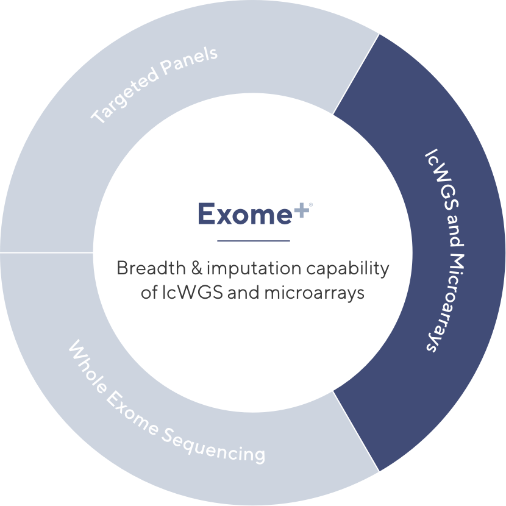
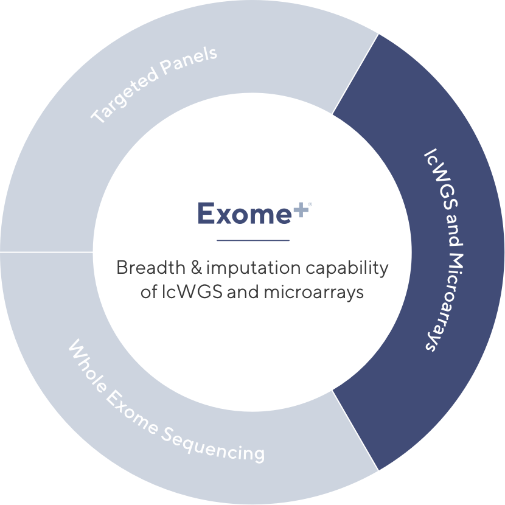
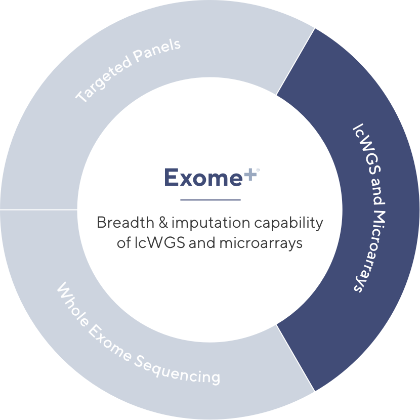
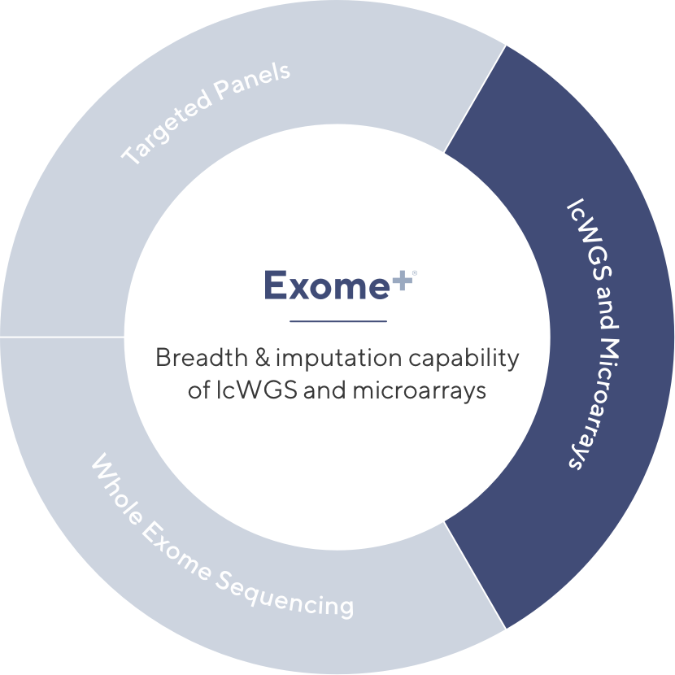

We've updated our policies.
Learn moreHelix’s Exome+® assay has been carefully optimized to provide the benefits of lcWGS, whole exome sequencing, microarrays, and targeted panels — all in one assay.
 

Panels are often used in clinical settings because they’re low cost and provide high quality coverage of specific, pre-defined genomic regions of interest. While useful in certain settings, such assays are limited by their narrow focus. With ≥ 99.5% call rate across ~600 genes relevant to many disease states, the Exome+ assay enables you to run multiple panel-grade analyses with a single sample.
 
